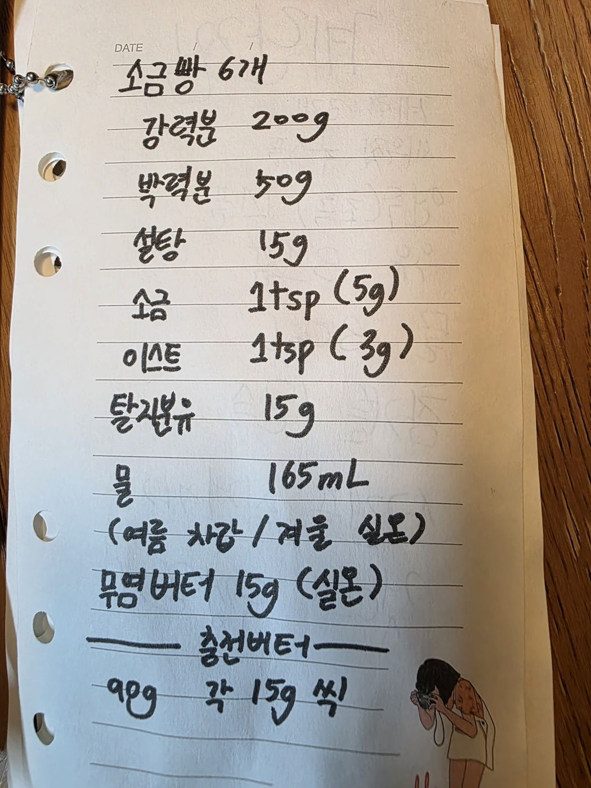

← 전체 레시피
빵
🥖 소금빵
손으로 적은 노트를 그대로 옮긴 레시피입니다.
분량
6개
굽기
원본에 굽기 온도 미기재
📷 원본 노트 사진 보기
재료
반죽
강력분 200g
박력분 50g
설탕 15g
소금 1tsp (5g)
이스트 1tsp (3g)
탈지분유 15g
물 165mL (여름엔 차갑게 / 겨울엔 실온)
무염버터 15g (실온)
충전 버터
무염버터 90g — 개당 15g씩
만드는 법
가루 재료와 물을 섞어 반죽하고, 실온 버터 15g을 넣어 매끈해질 때까지 반죽한다.
1차 발효 후 6등분한다.
물방울 모양으로 성형해 길게 밀고, 충전 버터 15g을 넣어 말아준다.
2차 발효 후 소금을 뿌려 굽는다.

원본 노트 사진 — 탭하면 크게 볼 수 있어요